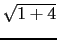
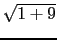
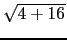
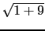
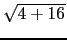

suivant: Produit de Hadamard (version
monter: Création et arithmétique des
précédent: Elévation d'une matrice à
Table des matières
Index
Produit de Hadamard : hadamard product
Voir aussi .* pour les listes (cf 6.39.5)
hadamard (ou product) a comme arguments deux matrices A et B
de même ordre.
product est une fonction plus générale (voir aussi 6.38.31
et 6.43.6).
hadamard (ou product) renvoie la matrice constituée par le
produit terme à terme des éléments de A et B.
On tape :
hadamard([[1, 2],[3,4]],[[5, 6],[7, 8]])
On obtient :
[[5,12],[21,32]]
Si on tape :
hadamard([1,2],[3,4])
ou
hadamard([[1,2],[3,4]])
On obtient :
5*sqrt(5)
Ici [1,2],[3,4] n'est pas considéré comme 2 vecteurs (car le produit de
Hadamard ne marche que sur des matrices) mais comme une matrice à 2 lignes.
hadamard calcule prend le produit des normes des vecteurs colonnes et des
vecteurs ligneset renvoie le plus petit des 2 :
* = 5
= 5 qui est plus petit que
** = 10
qui est plus petit que
** = 10 .
.
Mais si on tape :
product([1,2],[3,4])
ou
product([[1,2],[3,4]])
On obtient :
[3,8]
suivant: Produit de Hadamard (version
monter: Création et arithmétique des
précédent: Elévation d'une matrice à
Table des matières
Index
Documentation de giac écrite par Renée De Graeve